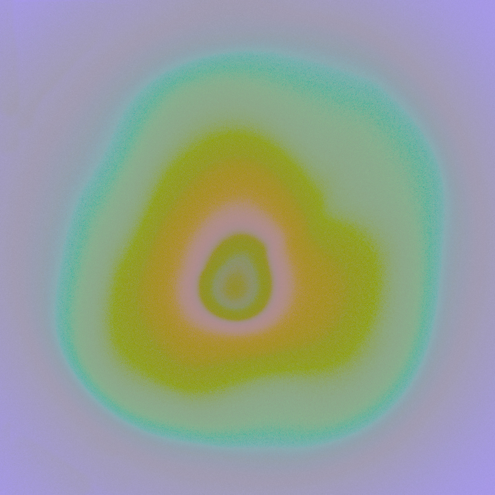

| La para siempre seguridad de estar de más en el lugar en donde los otros respiran. De mí debo decir que estoy impaciente porque se me dé un desenlace menos trágico que el silencio. Feroz alegría cuando encuentro una imagen que me alude. Desde mi respiración desoladora yo digo: que haya lenguaje en donde tiene que haber silencio. Alguien no se enuncia. Alguien no puede asistirse. Y tú no quisiste reconocerme cuando te dije lo que había en mí que eras tú. Ha tornado el viejo terror: haber hablado nada con nadie. El dorado día no es para mí. Penumbra del cuerpo fascinado por su deseo de morir. Si me amas lo sabré aunque no viva. |
Y yo me digo: Vende tu luz =extraña, tu cerco inverosímil. Un fuego en el país no visto. Imágenes de candor cercano. Vende tu luz, el heroísmo de tus días futuros. La luz es un excedente de demasiadas cosas demasiado lejanas. En extrañas cosas moro. Publicado en Sur, Buenos Aires, N 284, 1963 |